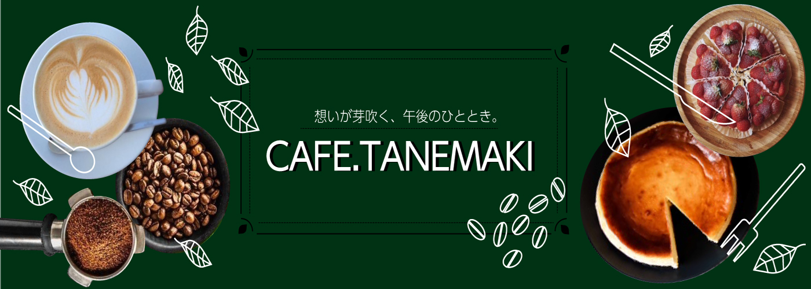
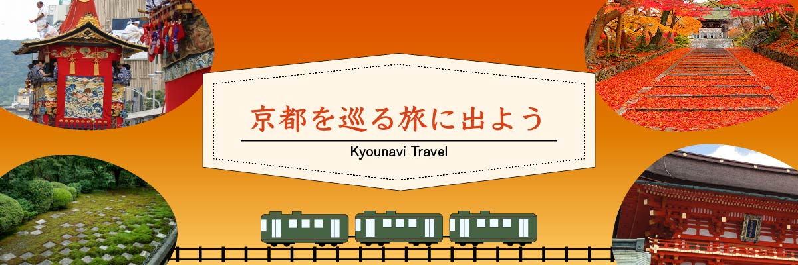

架空カフェサイトメインビジュアル
- 概要：架空カフェ「TANEMAKI」のWebサイトに表示されるメインビジュアルとしてデザインしました。
- 工夫した点：深めのグリーンを基調とし、コーヒーなどの写真を配置することで落ち着きのあるデザインになるように意識しました。
線画のイラストをアクセントに加え、情報量が多くても重くならないように工夫しました。
- 使用ツール：ilustrator・Photoshop
- 制作期間：3時間

架空旅行サイトメインビジュアル
- 概要：架空旅行会社「京ナビ」のWebサイトに表示されるメインビジュアルとしてデザインしました。
- 工夫した点：京都の風景の写真を組み合わせて、オレンジのグラデーションで歴史と文化を感じる温かみと見る人に楽しんでもらえるように意識しました。
電車のイラストを下部に添えて動きを演出しました。タイトルを中央に大きく配置し、初見で内容が伝わるように意識しました。
- 使用ツール：ilustrator・Photoshop
- 制作期間：2時間